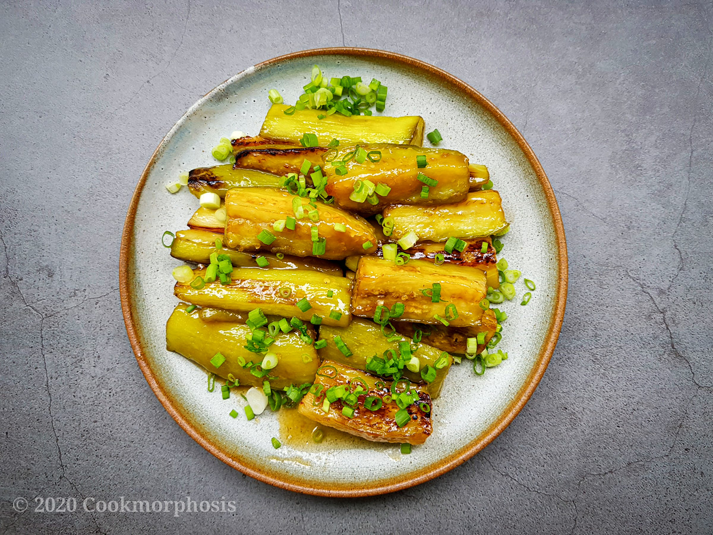

Miso Eggplant

Description
Estimated time: 30 minutes
Servings: 2-3
Ingredients
- 3 garlic cloves minced
- 1 onion sliced into strips
- 4 Chinese or Japanese eggplants sliced
- 2 tbsps of miso paste
- 1 tbsp of brown sugar
- 1 tbsp of mirin
- 2 tbsps of canola oil
- water
Steps
- Mix the miso, brown sugar, and mirin into a bowl
- Pour a little bit of water, enough so that the mixture becomes a soft paste
- Heat the canola oil on a pan at low heat
- At medium high heat, sautée the garlic and onion until they start to become brown
- Add the eggplant until it starts to become soft
- Add the miso mixture onto the eggplant and mix them well
- Simmer for 6 minutes